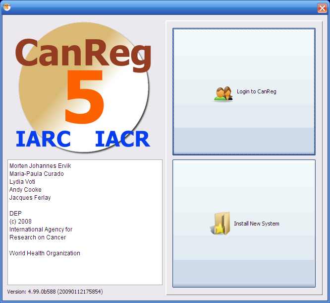
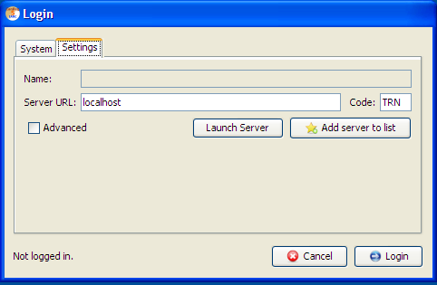
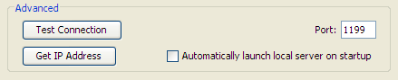
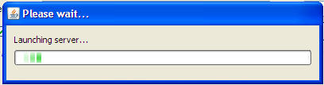
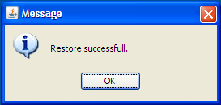
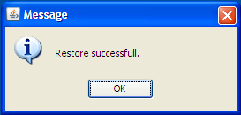

CanReg5 welcome screen
There are two options in this CanReg5 welcome screen:
* "Login to CanReg"
If CanReg5 has already been setup on this computer for your cancer registry, then click on this option to pass to the "Login/Password" panel.
* "Install New System"
The CanReg5 program has been installed but you wish to add the Registry definition for a particular Cancer Registry.






 
